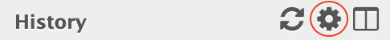

DESeq2

- Let's create a clean fresh history (
wheel --> Create New) and name it DESeq2 
- Copy the
.Countsdatasets from your STAR/ HISAT2 history to this new history
(wheel --> Copy datasets)
- Select the
DESeq2 tool with the following parameters:
how: Select group tags corresponding to levels- In
Factor:
- In
1: Factor
Specify a factor name: Treatment- In
Factor level:
- In
1: Factor level:
Specify a factor level: treatedCounts file(s): the 3 gene count files with treat in their name
- In
2: Factor level:
Specify a factor level: untreatedCounts file(s): the 4 gene count files with untreat in their name
- Click on
Insert Factor (not on Insert Factor level)
- In
2: Factor
Specify a factor name to Sequencing- In
Factor level:
- In
1: Factor level:
Specify a factor level: PairedCounts file(s): the 4 gene count files with paired in their name
- In
2: Factor level:
Specify a factor level: SingleCounts file(s): the 3 gene count files with single in their name
Files have header?: NoOutput normalized counts table: YesExecute